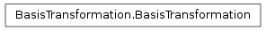
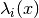
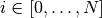
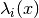
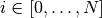

BasisTransformation¶
About the BasisTransformation class¶
The WaveBlocks Project
@author: R. Bourquin @copyright: Copyright (C) 2010, 2011, 2012, 2013, 2014 R. Bourquin @license: Modified BSD License
Inheritance diagram¶

Class documentation¶
- class WaveBlocksND.BasisTransformation(potential)¶
This class is the interface definition for general basis transformation procedures. The transformation switches between the canonical basis of the potential
 and its eigenbasis
and its eigenbasis  consisting
of the energy levels  with .
consisting
of the energy levels  with .- __init__(potential)¶
Create a new BasisTransformation instance for a given potential matrix
.Parameters: potential (A MatrixPotential instance.) – The potential underlying the basis transformation.
- transform_to_canonical(transformable)¶
Do nothing, implement an identity transformation.
- transform_to_eigen(transformable)¶
Do nothing, implement an identity transformation.